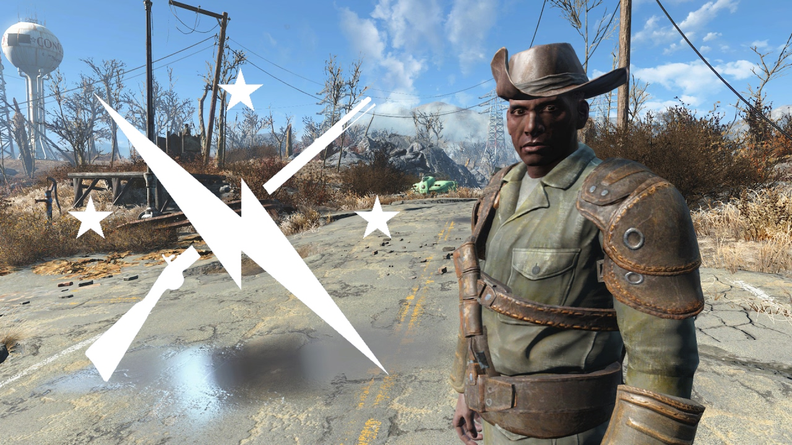

Finally, there are the Minutemen. This group is filled with
do-gooders who fight anyone or anything that jepordizes the
safetly of the Commonwealth and its people. They appear to resemble
cowboys or old generals.
I know I mentioned you will
likely run into them first, but I felt mentioning them last was
best. Let me explain why. They aren’t necessarily a faction.
The Minutemen are a militia-type group whose goal is to aid the
Commonwealth overall. They will help you fight the final battle
regardless of the outcome you may choose.

Pictured is Preston Garvey, previous leader for the Minutemen.
Timber Michaud
Web Development Final Project (May 2024)